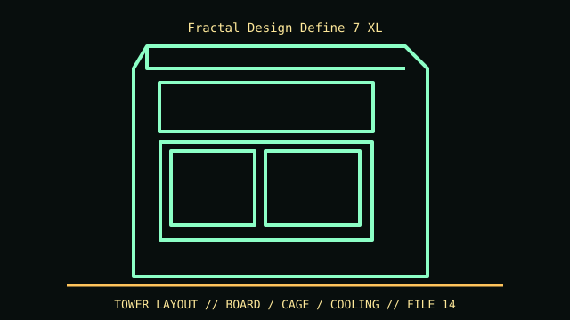

[ IDENTIFIED ENCLOSURE // DEFINE 7 XL FULL TOWER (NOT DEFINE 7 STANDARD) ]
Fractal Design Define 7 XL
240 × 566 × 600 mm (W × H × D); maximum GPU clearance 549 mm in open layout, CPU cooler 185 mm.

VARIANT / ARCHIVAL CAVEAT: Define 7 XL differs from Define 7 and XL TG/solid panel SKU bundles; check tray/Multibracket set and front door. Preserve sound damping and top fan bracket.
Mechanical specifications and fit
| Catalog identity | Define 7 XL full tower (not Define 7 standard) |
|---|---|
| Dimensions and clearances | 240 × 566 × 600 mm (W × H × D); maximum GPU clearance 549 mm in open layout, CPU cooler 185 mm. |
| Drive bays / mounts | Two external 5.25-inch bays, six 3.5/2.5-inch tray positions in standard mode plus two dedicated 2.5-inch mounts; storage layout uses optional trays. |
| Board, system and compatibility | SSI-EEB/SSI-CEB/E-ATX/ATX/mATX/ITX; 9 horizontal + 3 vertical expansion slots. Long GPUs/radiators/cages trade off in storage mode. |
| Revision / identification | Define 7 XL differs from Define 7 and XL TG/solid panel SKU bundles; check tray/Multibracket set and front door. Preserve sound damping and top fan bracket. |
Preservation and installation notes
Define 7 XL differs from Define 7 and XL TG/solid panel SKU bundles; check tray/Multibracket set and front door. Preserve sound damping and top fan bracket.
SSI-EEB/SSI-CEB/E-ATX/ATX/mATX/ITX; 9 horizontal + 3 vertical expansion slots. Long GPUs/radiators/cages trade off in storage mode.
- Capture the complete model/SKU, serial/date label, board assembly and bay/backplane/riser identifiers before disassembly; keep matched screws, trays, carriers, feet and cables with the case.
- Check the cited manual's specific build option before transferring hardware. Published maximum GPU, drive, fan or radiator capacity may not be simultaneous when a removable cage or alternative riser occupies that volume.
- For rack and vintage systems, preserve the exact rails, shields, doors, brackets and model-specific safety instructions; do not infer compatibility from a familiar brand or physical connector shape.
Manufacturer manuals and archival sources
- Fractal Design Define 7 XL manufacturer specificationsPrimary manufacturer or model-specific technical/manual reference used for the identification and mechanical data above.
- Fractal Design Define 7 XL product sheet and manualsSecond product manual, manufacturer resource or established technical archive; choose the exact regional SKU and revision.
When exact dimensions depend on configuration, the text says so; verify the measured specimen before making a fit or restoration decision.